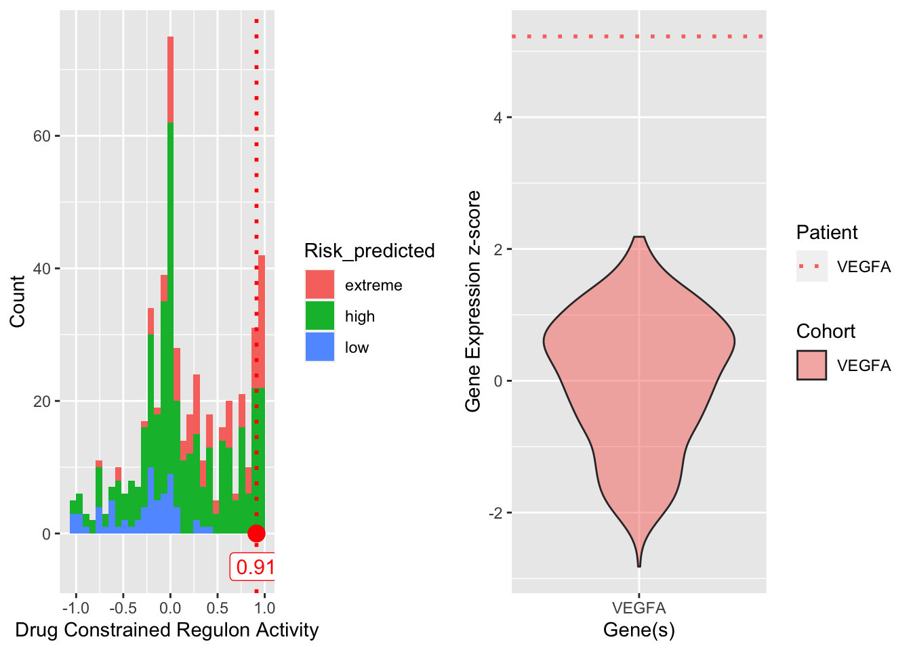

── Column specification ────────────────────────────────────────────────────────
cols(
.default = col_character(),
`Drug Constrained Regulon Activity` = col_double(),
`Drug Constrained Program Activity` = col_double(),
`All Regulon(s)` = col_number(),
`Overactive Regulon(s)` = col_number(),
`Underactive Regulon(s)` = col_double(),
`Underactive Program(s)` = col_double(),
max_glioblastoma.multiforme_phase = col_double(),
`Other FDA Appr.` = col_logical(),
TargetMutatedInPatient = col_logical(),
MutatedInPatient = col_logical(),
MutatedDetail = col_logical()
)
ℹ Use `spec()` for the full column specifications.
── Column specification ────────────────────────────────────────────────────────
cols(
.default = col_logical(),
Patient_ID = col_character(),
D_PFS = col_double(),
D_PFS_FLAG = col_double(),
Subtype = col_character(),
MGMT_Status = col_character(),
Histological_type = col_character(),
kmEstimate = col_double(),
GuanScore = col_double(),
Classer = col_character(),
Classer_binary = col_double(),
GuanScoreZScored = col_double(),
Risk_predicted = col_character(),
RiskClassAutophagy = col_character(),
RiskClassAutophagy_binary = col_double(),
X172 = col_character()
)
ℹ Use `spec()` for the full column specifications.21 regulons containing the target(s), VEGFA are overactive in this patient.
HALLMARK_HYPOXIA HALLMARK_MTORC1_SIGNALING HALLMARK_TNFA_SIGNALING_VIA_NFKB
No id variables; using all as measure variablesUsing X as id variablesUsing Gene_ID as id variables`stat_bin()` using `bins = 30`. Pick better value with `binwidth`.
sessionInfo()R version 4.0.5 (2021-03-31)
Platform: x86_64-apple-darwin17.0 (64-bit)
Running under: macOS Catalina 10.15.7
Matrix products: default
BLAS: /Library/Frameworks/R.framework/Versions/4.0/Resources/lib/libRblas.dylib
LAPACK: /Library/Frameworks/R.framework/Versions/4.0/Resources/lib/libRlapack.dylib
locale:
[1] en_US.UTF-8/en_US.UTF-8/en_US.UTF-8/C/en_US.UTF-8/en_US.UTF-8
attached base packages:
[1] parallel stats4 stats graphics grDevices utils datasets
[8] methods base
other attached packages:
[1] reshape2_1.4.4 fs_1.5.0 tictoc_1.0.1
[4] data.table_1.14.0 org.Hs.eg.db_3.12.0 AnnotationDbi_1.52.0
[7] IRanges_2.24.1 S4Vectors_0.28.1 Biobase_2.50.0
[10] BiocGenerics_0.36.1 ReactomePA_1.34.0 enrichplot_1.10.2
[13] msigdbr_7.2.1 clusterProfiler_3.18.1 plyr_1.8.6
[16] jsonlite_1.7.2 gridExtra_2.3 DT_0.19
[19] here_1.0.1 forcats_0.5.1 stringr_1.4.0
[22] dplyr_1.0.5 purrr_0.3.4 readr_1.4.0
[25] tidyr_1.1.3 tibble_3.1.0 ggplot2_3.3.5
[28] tidyverse_1.3.1
loaded via a namespace (and not attached):
[1] readxl_1.3.1 shadowtext_0.0.7 backports_1.2.1
[4] fastmatch_1.1-0 workflowr_1.6.2 igraph_1.2.6
[7] splines_4.0.5 BiocParallel_1.24.1 crosstalk_1.1.1
[10] digest_0.6.27 htmltools_0.5.1.1 GOSemSim_2.16.1
[13] viridis_0.6.0 GO.db_3.12.1 fansi_0.4.2
[16] magrittr_2.0.1 checkmate_2.0.0 memoise_2.0.0
[19] graphlayouts_0.7.1 modelr_0.1.8 colorspace_2.0-0
[22] blob_1.2.1 rvest_1.0.0 rappdirs_0.3.3
[25] ggrepel_0.9.1 haven_2.4.0 xfun_0.22
[28] crayon_1.4.1 graph_1.68.0 scatterpie_0.1.5
[31] glue_1.4.2 polyclip_1.10-0 gtable_0.3.0
[34] graphite_1.36.0 scales_1.1.1 DOSE_3.16.0
[37] DBI_1.1.1 Rcpp_1.0.6 viridisLite_0.4.0
[40] xtable_1.8-4 bit_4.0.4 reactome.db_1.74.0
[43] htmlwidgets_1.5.3 httr_1.4.2 fgsea_1.16.0
[46] RColorBrewer_1.1-2 ellipsis_0.3.1 pkgconfig_2.0.3
[49] farver_2.1.0 sass_0.3.1 dbplyr_2.1.1
[52] utf8_1.2.1 tidyselect_1.1.0 labeling_0.4.2
[55] rlang_0.4.10 later_1.1.0.1 munsell_0.5.0
[58] cellranger_1.1.0 tools_4.0.5 cachem_1.0.4
[61] downloader_0.4 cli_3.0.1 generics_0.1.0
[64] RSQLite_2.2.5 broom_0.7.6 evaluate_0.14
[67] fastmap_1.1.0 yaml_2.2.1 knitr_1.32
[70] bit64_4.0.5 tidygraph_1.2.0 ggraph_2.0.5
[73] mime_0.10 DO.db_2.9 xml2_1.3.2
[76] compiler_4.0.5 rstudioapi_0.13 reprex_2.0.0
[79] tweenr_1.0.2 bslib_0.2.4 stringi_1.5.3
[82] highr_0.9 lattice_0.20-41 Matrix_1.3-2
[85] vctrs_0.3.7 pillar_1.6.0 lifecycle_1.0.0
[88] BiocManager_1.30.12 jquerylib_0.1.3 cowplot_1.1.1
[91] httpuv_1.5.5 qvalue_2.22.0 R6_2.5.0
[94] promises_1.2.0.1 MASS_7.3-53.1 assertthat_0.2.1
[97] rprojroot_2.0.2 withr_2.4.2 hms_1.0.0
[100] grid_4.0.5 rmarkdown_2.7 rvcheck_0.1.8
[103] git2r_0.28.0 ggforce_0.3.3 shiny_1.6.0
[106] lubridate_1.7.10